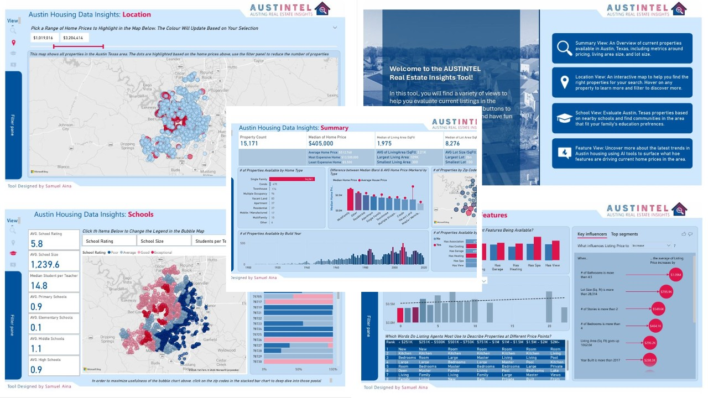
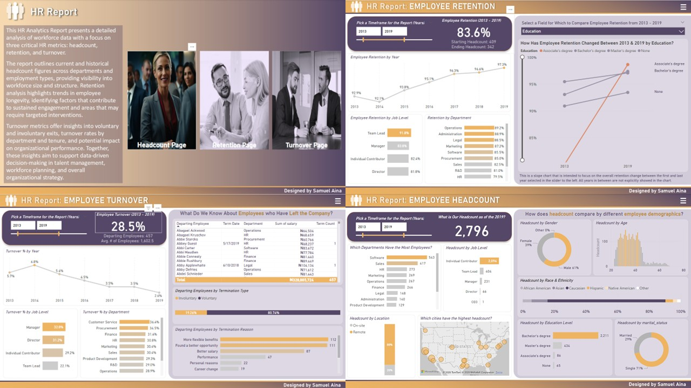
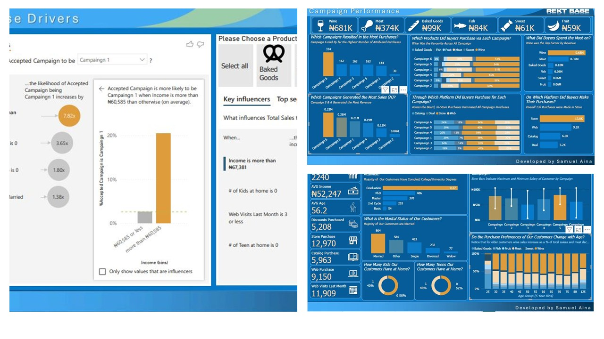
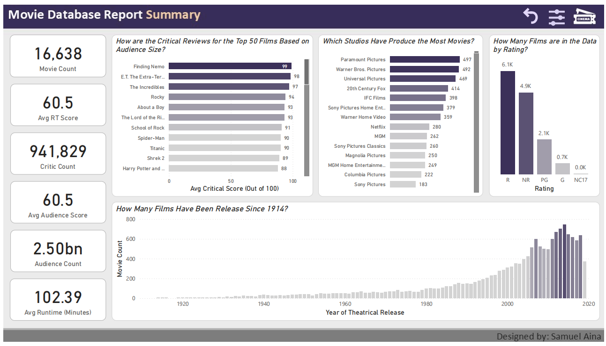

Austin Housing Market Insight
The goal is to analyze housing data to answer key questions such as: which features most influence home pricing, how property values vary by location, the impact of nearby schools on property prices, and how the housing market has evolved over time.
Key insights reveal that properties with pools, garages, and scenic views tend to list for higher prices. Homes built after 2017 and those with 4.5 or more bathrooms also attract premium pricing. Additionally, higher-rated schools are associated with increased home values, while listings in Central and West Austin are generally denser and more expensive.
In conclusion, buyers are encouraged to consider newer homes and neighborhoods with highly rated schools. Sellers should emphasize luxury features in their property listings to attract higher offers. Analysts are recommended to enhance the analysis by incorporating time-series data or forecasting visuals for deeper insights.
Tools Used: Power BI, DAX, Power Query
Kraken Koffee Infographic Project

Kraken Koffee aims to better understand its sales trends, top-performing products, customer behaviours, and store performance. Additionally, they seek a rough forecast of future sales based on historical data to guide decision-making.
The analysis shows that the best-selling product is Davy Jones' Sustainably Grown Organic Hot Chocolate (Large). The peak sales period is 10 AM, which aligns with typical morning coffee rush behavior. Sales are noticeably lower outside of peak hours, with purchases before 7 AM and after 7 PM contributing only 3.6% of total revenue. Additionally, Kraken Koffee's overall sales are on an upward trend, especially between April and June.
In conclusion, it is recommended to optimize store hours by aligning opening and closing times with peak sales periods. Expanding the range of popular products, such as organic hot chocolate and dark chocolate blends, can help boost revenue. To maintain growth momentum, businesses should leverage data-driven sales forecasts to plan effective promotions. Enhancing customer engagement by identifying and catering to location-specific product preferences is also essential. Lastly, continuously updating real-time dashboards will support informed, strategic decision-making.
Tools Used: Power BI, DAX, Power Query
HR Dashboard Project
The organization lacked a centralized and visual approach to analyzing key HR metrics, including total employee count over time, retention rates by department, job level, and demographics, as well as turnover analysis covering reasons and termination types. The existing data was scattered across multiple CSV files and required transformation into a robust data model to enable accurate analysis and reporting.
The analysis shows that workforce growth was strong by 2019, reflecting stable hiring practices with a predominance of remote work. Retention rates were high in leadership roles and departments such as Operations and Administration. However, there are turnover risks, particularly due to high voluntary turnover in Customer Service and Procurement, indicating a need for targeted HR intervention. Additionally, the workforce displays a diverse distribution across gender, race, education, and age demographics.
It is recommended to focus on strategic retention planning by targeting high-turnover departments and to optimize benefits and compensation by addressing the most common reasons for termination. Strengthening leadership pipelines by leveraging successes at the team-lead level is also important. Furthermore, expanding the analysis to include performance and engagement metrics will provide deeper insights, while automating data refreshes with scheduled monthly updates will ensure real-time, actionable information.
Tools Used: Power BI, DAX, Power Query
Optimizing Retail Sales with BI
The client required a comprehensive analysis of their marketing and sales data to evaluate the performance of their six recent marketing campaigns, assess how their products are performing, understand their customer base, and identify the factors that influence campaign effectiveness and buyer decision-making.
Key insights from the dashboards and reports reveal that Campaigns 5 and 6 were the most successful in generating sales. Wine emerged as the most preferred product across all campaigns. The majority of purchases were made in-store, highlighting the importance of in-store promotional strategies. Additionally, high-income earners and married customers were more likely to participate in marketing campaigns. Purchase habits also varied by age, with older customers showing a stronger preference for wine.
Based on the analysis, it is recommended that the client focus their marketing efforts on the high-performing Campaigns 5 and 6 while refining the lower-performing ones. Prioritizing in-store promotions is important, given that most purchases occur there. Personalized marketing strategies should be used to target high-income and married customers more effectively. Additionally, leveraging insights about product preferences by age group can help optimize inventory management and sales strategies.
Tools Used: Power BI, DAX, Power Query
Street Fighter Interactive Dashboard
The goal of this project was to create an engaging interactive dashboard that allows users to select Street Fighter characters and instantly view their abilities and stats. The dashboard uses image URLs and SVGs to visually represent each fighter's strengths, with dynamic card visuals updating based on user selection.
Key insights include seamless interactivity through clickable cards, clear visualization of character stats, and a responsive design that enhances user experience across devices.
In conclusion, this project demonstrates the effective use of dynamic visuals and interactive elements to present data in an engaging, user-friendly way.
Tools Used: Power BI, DAX, Power Query
Movie Analytics Dashboard
The project aimed to provide a centralized and visual approach to analyzing over 16,000 movies, focusing on metrics such as average critic and audience scores, genre distribution, contributor impact, and release trends. The raw dataset required extensive transformation, including splitting multivalue columns, unpivoting data, creating dimension tables, and building a robust star schema for analysis in Power BI.
The analysis revealed that Drama is the most produced genre, but Action & Adventure and Animation tend to score higher with audiences. Directors like Spielberg and Hitchcock consistently deliver high ratings, while some actors and writers also show strong performance trends. There were clear differences between critic and audience perceptions, highlighting the subjective nature of movie reception.
It is recommended that studios and streaming platforms consider contributor-based performance when making production or recommendation decisions. Leveraging historical data to match directors and genres that resonate with audiences can improve success rates. Ratings analysis should be complemented with sentiment and financial data for a more holistic view.
This dashboard serves as a dynamic tool for data storytelling in the film industry, built with Power Query, DAX, and interactive Power BI features including slicers, bookmarks, and drillthrough pages. It enables users to explore key trends, evaluate contributor influence, and make informed decisions based on historical data insights.
Tools Used: Power BI, DAX, Power Query